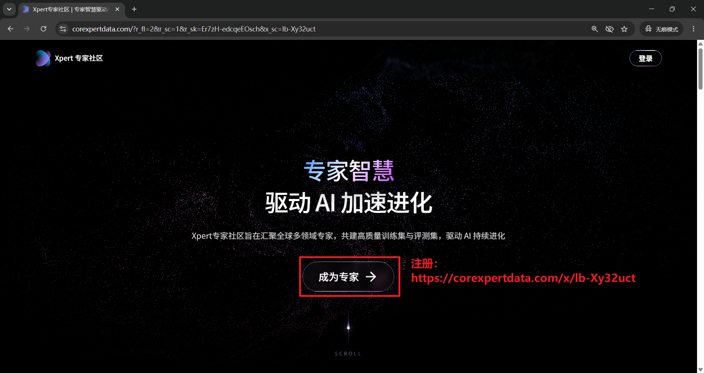
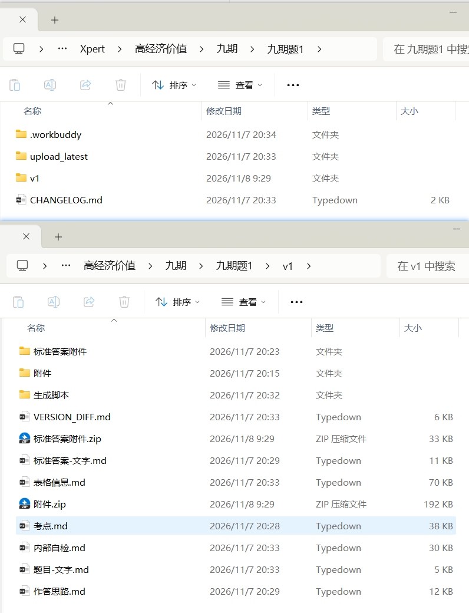
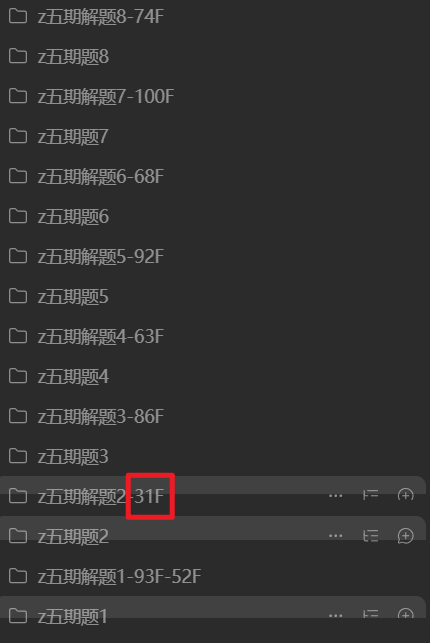
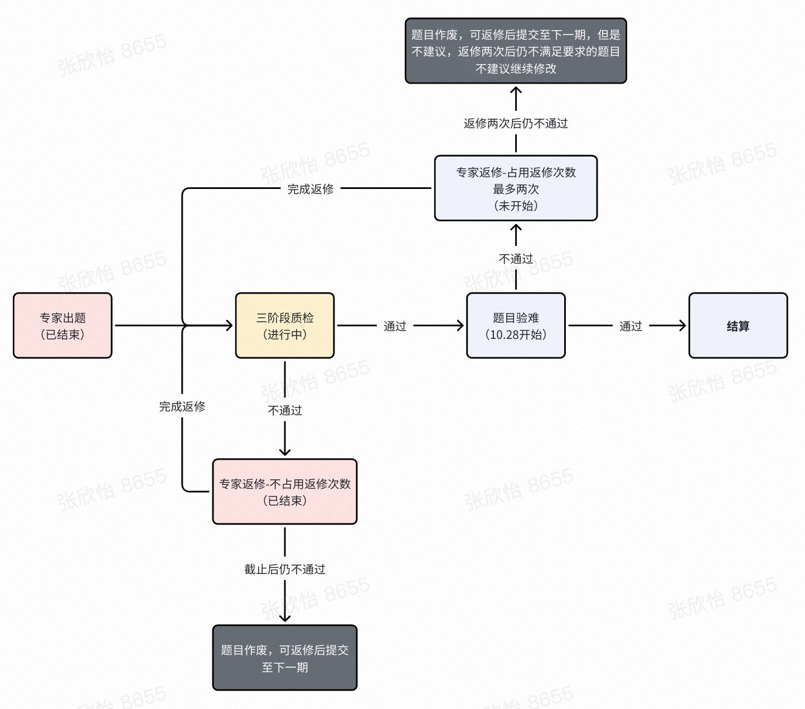
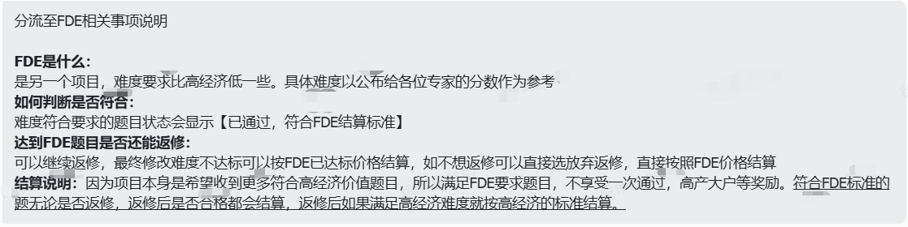
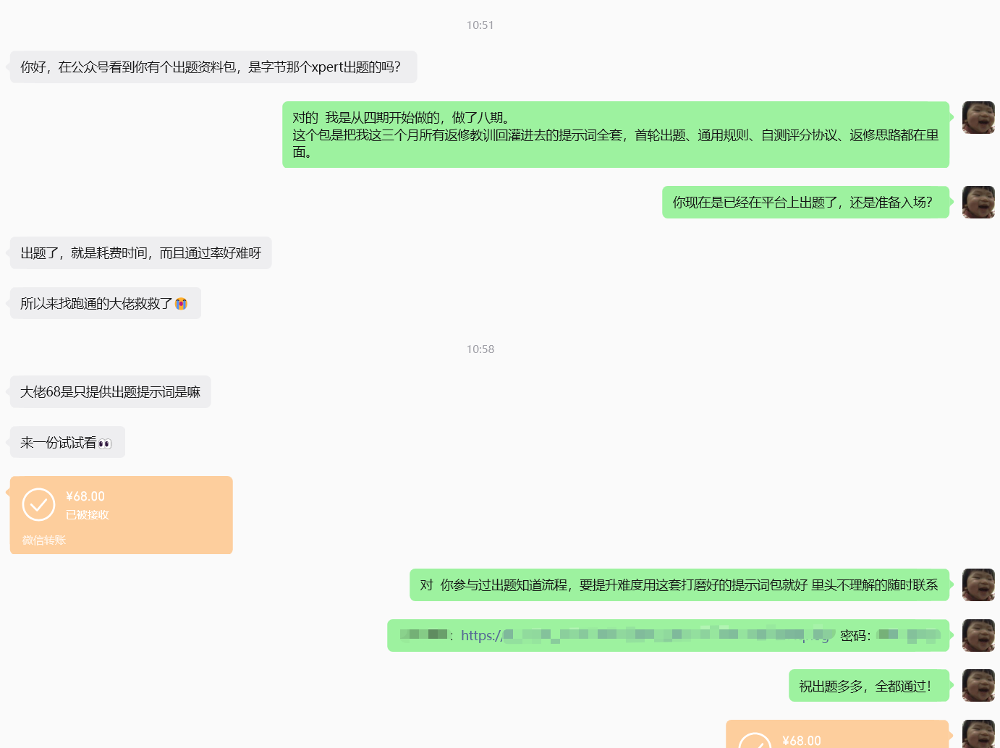
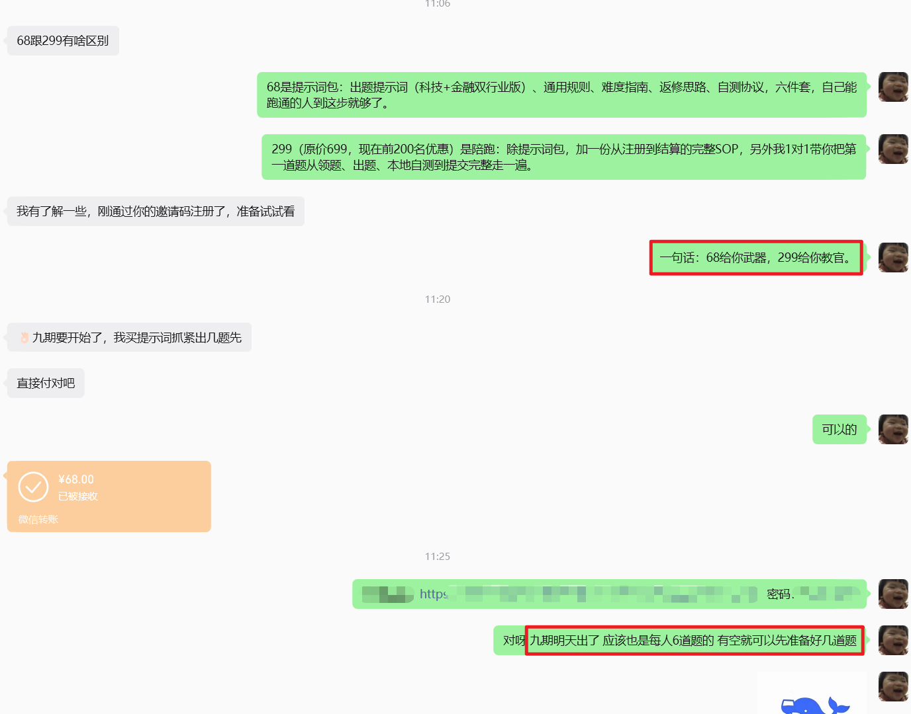
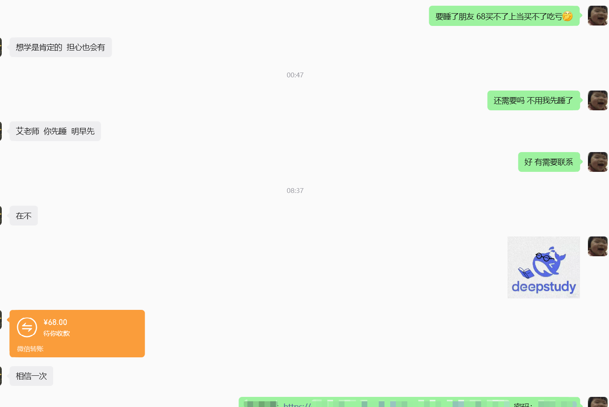
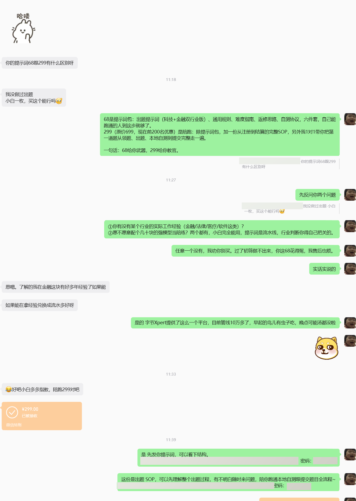
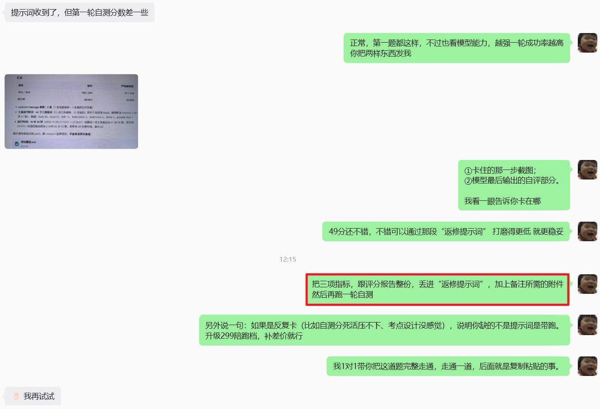

XPERT · 实战系列 VOL.03
出题副业只能闷头摸索？
从注册到结算10道关
我画成了全流程地图
注册认证 · 入群领题 · 首轮出题 · 本地自测 · 提交返修 · 结算兜底
AI启蒙学习 · XPERT实战
📦 4 Parts + Conclusion
👉 滑动
PART 01
全流程地图
10道关逐关拆解
PART 02
免费送的认知
白给的三条干货
PART 03
照例泼冷水
谁适合谁劝退
PART ///
写在最后
两档拿走全套
📊
待补素材
此处插入：10道关全流程地图卡（10节点流程，第3/5/8关标红点；可兼作公众号封面图）
字节Xpert高经济价值出题任务，系列第三篇。前两篇交代过剧情：四期每题返修3遍磨到想摔键盘，五期国庆两个半钟16题、一次通过6题2题FDE兜底，折算一万六。被问得最多的一句话是：流程呢？
今天补上。我把从注册到结算的完整链路，做成了10步SOP。看完这篇，你会知道每一关在考你什么、哪几关最容易死、以及自己适不适合上车。
先说清楚：SOP全文是我付费资料的一部分，这篇只放地图和认知，不放操作细节。
01
PART
全流程地图：10道关
THE 10 GATES · PIPELINE
注册认证
简历+学历认证报告是结算的硬门槛，不是走形式。好消息是平台在开放期，据了解还没有被拒的情况，简历突出领域专业性、有数据示例最好，一般一天过审。

— Xpert专家社区注册入口，点「成为专家」开始
申请入群领题
项目广场申请或盯飞书大群填问卷，审核过了拉进任务群。关键认知有两条：出题表里每行题的行业是预分配的，领对应行业的题槽就行，个人背景不等于出题方向，学软件的做会计兼职，出财务题，平台老师原话「完全符合规范」；五期起领题不用卡点，每人上限6题，没有你行业的题直接@老师放题。
首轮出题
一次成型全靠提示词：上传5样基础材料，粘贴提示词，AI跑40到60分钟吐出全套交付物。核心心法一句话——难度必须埋在材料里，不能写在题面上。题面每写一句「必须如何处理」，等于把坑提前填平，难度分就压不过线。

— AI跑完后的工作目录实拍：题面、考点、标答、附件、内部自检全套自动落盘。这类界面截图，SOP里每一关都有
可选加固
赶时间就跳过。国庆那次我们16题全部省掉加固直接交，赌的就是提示词已经把坑避完了。
本地自测
答题评分分开两个窗口，跑3次取平均。最反直觉的一课：本地分数预测不了平台分数，本地73分平台44分放行、本地86分平台48分也放行。自测只干一件事：筛掉明显过易的题。

— 本地自测分 vs 平台机评分逐题对照（前作已发布）
提交
文字贴表、附件打包、改个状态字段，5分钟的事。速度就是钱——一次合格激励200一题，高产激励另算。
平台打分
三阶段质检加题目验难的漏斗，难度分50以下过关。状态读懂再动：显示「需要重跑」或「0」是模型回复被截断，等重抓就行，千万别手贱改题。

— 三阶段质检+题目验难漏斗：质检返修不占次数、验难返修最多2次（前作已发布）
不达标返修
期限一般3天。先诊断分档再动刀：50到65分改考点，65以上整体重构，只有步数时长不够就只加工作量。质检意见是平台免费的校准信号，逐条回灌进提示词——四期返修3遍到五期一次过6题，中间就是这一步。
返修后再测再交
版本纪律：永远开新版本目录，旧版只读。
结算
高经线按当期单价结算；够不着的有FDE兜底，600到1000一题，验难过不了高经线不等于白做。结算周期慢，四期中秋发布的任务十月底才出第一轮质检——管线不是存款，落袋的才是钱。

— FDE兜底机制官方通知原文（打码处为内部信息）
02
PART
三个免费送你的认知
FREE LESSONS · NO PAYWALL
SOP是付费的，但这三条认知今天白送，每一条都是真金白银换的：
算力可以白嫖
智谱ZCode和混元WBhy4近两周每晚送2亿免费token，周末5亿，23点到次日9点生效。用免费额度就能把第一道题完整跑通。活动随时可能收回，看到就要领。
出题可以并发
两套环境同一套提示词，我和老婆一人一个方向同时跑，这就是家庭作战单元时薪能摸到5000的结构性原因。
FDE是安全网
有了兜底结算，策略就该反过来：先交卷，吃一次合格激励，让平台机评当第一轮裁判，挂了再修。敢投比会磨值钱。
03
PART
照例泼冷水
HONEST WARNING
不是谁都能上车：没行业纵深（金融/法律/医疗/软件）的，难度分过不了机评；不想迭代提示词的，6天10版是常态；时间碎成渣的，返修3天的期限手慢题废。还有一句要反复说：平台明令严禁纯AI出题，AI是流水线工人，行业判断和最终把关必须是人——这也是为什么这套SOP里每一关都有「人来拍板」的设计。
✦ 窗口期还在
九期就在眼前，八期11月9日结束，下一期马上接上。收题的需求量还是很大，缺的从来不是名额，是能一次过线的题。
///
LAST
写在最后：拿走全套
TAKE THE WHOLE KIT
这套东西我按两个档放出来：
提示词包 · 68元
出题提示词（科技/金融双行业版）+ 出题通用规则 + 难度突破指南 + 返修思路。就是国庆那次豪赌的底牌。
陪跑指导 · 原价699，前200名299
提示词包之外，加出题完整SOP（从注册认证到结算提现，10道关每一步带界面截图），再送1对1，带你把第一道题从领题到本地自测到提交完整跑通。
交付现场：已经有人上车
资料包放出去的第一天，交付就已经在发生。买家画像和这篇文章写的一样准：有在平台上出题被卡住的老手，拿包对着自己卡住的题直接改；有踩着九期窗口的新人，对比完两个档位选了68，付完款第一句话是「明天出题来得及吗」；也有不啰嗦直接上299陪跑的。挑几张交付现场（链接密码已打码）：

— 平台内老手：出题费时、通过率低，68拿包对着卡点直接改

— 九期新人：对比两档后选68，交付时顺便提醒了出题节奏

— 咨询完次日主动转账，附言「相信一次」

— 直接上299陪跑档的交付现场

— 还在咨询窗口的你，问的无非就是上面这些问题
还在犹豫的，把上面10道关再翻一遍，对号入座。

— 我的Xpert邀请码（发布前核对有效期）
想要的，公众号后台发「高经」两个字，备注高经，我的微信会自动发给你。
进化得快的东西——
先上车的人吃肉，后上车的喝汤，最后来的刷碗
前两篇我说过，这事是跟着AI一起进化的练兵场。九期见。
我是艾启蒙，用AI陪伴成长，用技术创造价值！这个系列的战报，会一直更下去。
既然看到这里了，如果觉得有用，随手点个赞、在看、转发三连吧。
THANKS FOR READING